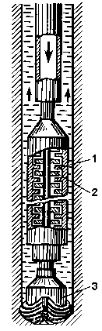
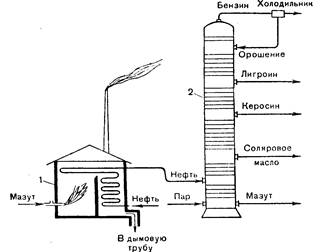

|
Заняття
2.
Тема: ПАЛИВНО-ЕНЕРГЕТИЧНИЙ КОМПЛЕКС. ПАЛИВНА
ПРОМИСЛОВІСТЬ
Питання
до розгляду:
1. ПЕК. Його
структура.
2. Нафтова промисловість.
3. Газова промисловість.
ЧИ
ЗНАЄТЕ ВИ ЩО:
*Термін окупності газопроводу «Північний
потік» (що проходить по дну Балтійського моря:
Виборг-Графсвайльд) складає 14-15 років.
Будівництво першої вітки почато було в 2010 році,
запущена в четвертому кварталі 2011, друга і
остання вітка газопроводу будуть побудовані і
запущені пізніше. При цьому одна вітка зможе
забезпечити лише 13,5% потреби країн Європи в
газі.
* У зв'язку з істотним подорожчанням в
другій декаді 21 століття вуглецевого палива,
особливо нафти, експерти енергетичної компанії
Ексон-Мобіл прогнозують до 2030 року збільшення
світового попиту на газ на 35%, а вугілля - на
20%.
*Один з відомих висловів Д.І.Менделєєва
звучить таким чином: «Нафта - не паливо, палити
можна і асигнаціями»
Питання
для співбесіди:
1. Склад паливної промисловості.
2. Значення і взаємозв’язки
паливної промисловості з іншими галузями
господарського комплексу.
3. Поняття і структура паливного
балансу.
4. Властивості і використання
нафти.
5. Способи буріння нафтових
свердловин.
6. Видобування нафти на
поверхню.
7. Транспортування нафти.
8. Перегонка нафти.
9. Хімічні методи переробки
нафти.
10. Види і використання
природних газів.
11. Види і властивості вугілля.
12. Видобування вугілля
підземним способом.
13. Видобування вугілля
відкритим способом.
14. Переробка вугілля.

Заняття №1
Познайомитись за допомогою малюнків (Малюнки. 1;
2) з обладнанням для роторного буріння і буріння
турбобуром.
Описати конструктивні риси обладнання роторного
буріння.
Підписати назви складових частин обладнання на
Малюнках 3 та 4.
Малюнок
1. Схема розміщення бурового обладнання
на свердовині
Малюнок
2. Буровий інструмент в розрізі

Малюнок
3. Турбіна роторного буріння

Малюнок
4. Свердловина роторного буріння
Завдання
№2
Систематизувати дані про способи буріння нафтових
свердловин.
Заповнити форму 7.
| Призначення
елементів бурового обладнання |
Способи буріння
|
| Роторне |
Турбобуром |
Електробуром |
|
Бурова
вишка
|
|
|
|
|
Двигун
(тип)
|
|
|
|
|
Колона
бурильних труб
|
|
|
|
|
Бурильні
інструменти
|
|
|
|
|
Глиняний
розчин
|
|
|
|
|
Глибина
буріння
|
|
|
|
|
Переваги
|
|
|
|
Недоліки
|
|
|
|
Завдання
№3
Познайомитись з особливостями переробки нафти
методом перегінки на Малюнку 5.
Скласти технологічну схему переробки нафти на
складові компоненти (заповнити форму 8).

Малюнок
5. Загальна схема переорбки нафти
(трубчаста печі та ректифікаційна колонна).
|
Трубчата піч
|
Ректифікаційна колона
|
Фракції
|
Конструкція:
Процес:
|
Конструкція:
Процес:
|
|
Форма 8.
Структура переробки нафти на складові.
Завдання №4
Познайомитись з хімічними методами переробки нафти
– крекінгом і піролізом.
Скласти структурні схеми даних процесів. Заповнити
форми 9 і 10.
|
ТЕРМІЧНИЙ КРЕКІНГ
|
Призначення:
|
|
Сировина:
|
|
Процес
в трубчастій печі:
|
|
Температура,
тиск та процес в реакторі:
|
|
Процес в
ректифікаційній колоні:
|
|
Отримані
фракції:
|
|
Форма 9.
Термічній крекінг.
|
ПІРОЛІЗ
|
Призначення:
|
|
Сировина:
|
|
Температура,
тиск та процес в реакторі:
|
|
Використання:
|
|
Продукція:
|
|
Форма 10.
Піроліз.
Завдання
№ 5
Систематизувати дані про основні види вугілля і їх
господарське використання.
Заповнити форму 11.
|
Властивості
вугілля
|
Види
вугілля |
| Буре
вугілля |
Кам’яне
вугілля |
Антрацити |
|
Фізичні властивості
|
|
|
|
|
Вміст вуглецю
|
|
|
|
|
Теплотворна здатність
|
|
|
|
|
Переваги
|
|
|
|
|
Недоліки
|
|
|
|
Форма 11.
Піроліз.
Завдання
№6
Систематизувати дані про основні напрямки
технологічного використання вугілля.
Заповнити форму 12.
| Вид
переробки |
Зміст
процесу |
Обладнання |
Продукти
переробки |
Використання
продуктів |
|
Коксування вугілля
|
|
|
|
|
|
Напівкоксування вугілля
|
|
|
|
|
|
Газифікація вугілля
|
|
|
|
|
|
Гідрогенізація вугілля
|
|
|
|
|
Форма
12. Технологічне
використання вугілля.
Завдання
№7
Користуючись даними таблиці 2 розрахувати
кількість кам’яного вугілля, бурого вугілля і
нафти, що потрібні для електростанції, яка
виробляє за рік 40 млн. кВт. ч. електроенергії.
Для виконання даного завдання слід враховувати, що
1 кг умовного палива дорівнює в середньому 2 кВт.
ч. електроенергії з урахуванням ККД
електростанцій.
Тепловий коефіцієнт дозволяє порівнювати різні
види палива між собою через умовне паливо,
коефіцієнт якого дорівнює 1.
Тому визначивши необхідну кількість умовного
палива, можна розрахувати відповідну кількість
будь-якого палива.
Для
цього слід використовувати таку формулу:
Тн=Тумов/К
Тн - кількість
натурального палива
Тумов - кількість
умовного палива
К - тепловий
коефіцієнт натурального палива
Тепловий коефціент розраховуються відносно
теплотворної здатності камяного вугілля. Він
дорівнює 1.
Розрахувати тепловий коефіціент для:
Нафти (10,5 Ккал), кам'яного вугілля (7 Ккал),
брого вугілля (3 Ккал), торфа (3,04 Ккал).
ЕКЗАМЕНАЦІЙНІ ПИТАННЯ
СПИСОК
ДЖЕРЕЛ
1. Куракина А.Ф. Основы промышленного и
сельскохоз. произв-ва .
М., 1981.
2. Плоткин М. Л. Основы промышленного
производства. М., 1977.
3. Хрущев А. Т. География промышленности
СССР. М., 1990.
4. Экономика отраслей народного хозяйства /
Под ред. А. С. Кима. Мн., 1987.
5. Анализ хоз. деятельности в промышлен. (под
редакцие В.И. Стражева). Мн., 1997.
6. Назаренко Н. Г. Экономика сельского хозяйства.
М., 1996.
7. Манулик А. В. Здравоохранение: вопросы теории и
организации управления Учеб.-метод, пособие. Мн.,
1994.
8. Щетинин В. П., Хроменков Н. А. Экономика
образования. М., 1998.
9. Ярошевич В. П., Шкурин М. И. Общий курс
транспорта: Учеб. пособие. Гомель, 1997 |